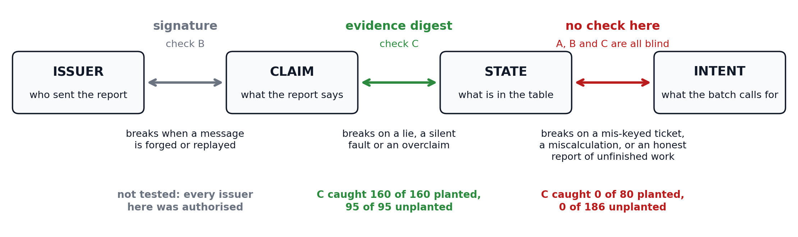

Kenny Wang, Independent Researcher. With Apart Research.
Code, run records and tables: https://github.com/cirwel/signed-is-not-true
A digital signature proves who sent a claim, not that the claim is true. I measure that gap in a cross-principal handoff between LLM agents. In a three-worker refunds pipeline on a throwaway database, one principal’s worker reports “done” and the other principal’s worker pays out on that report. Before paying, the receiver applies one of three checks to the same transcript: trust the message (A), verify a signed voucher’s origin and validity (B), or verify the voucher and compare the evidence digest it carries with the effect the receiver reads itself (C). Across 320 runs with two local open-weight models (40 seeds for each model and condition), signature verification caught none of the 160 false “done” claims produced by planted lies and silent tool faults, exactly as many as plain trust, and all of them went on to wrong payouts. The evidence check caught all 160, raised no false alarms on 80 honest runs, and cost under a millisecond with no model calls. In a condition added after the hypothesis lock, where the worker honestly applied a mis-keyed instruction and reported exactly what it did, the evidence check accepted all 80 handoffs, and every one ended in wrong payouts. Comparing a claim with the observed state catches lies and faults but not honest mistakes, because the state it checks against is itself wrong. Neither model produced an organic false claim in 80 honest runs. The results argue for checking claims against independently observable effects, and for being explicit about which effects a receiver cannot observe.
Agent pipelines increasingly hand work from one agent to another across organisational lines: one principal’s worker reports that a step is done and another principal’s worker acts on that report. Provenance tools answer the question “who sent this?” A digital signature binds a message to a key, and a key to an issuer. They do not answer the question the receiver actually has, which is “is this true?” An authorised issuer can sign a false statement, and the signature verifies.
This gap is easy to state and rarely measured. I measure it in a small, fully observed setting: a three-worker refunds pipeline run by local open-weight LLM agents for two principals. Ground truth is the database, so every handoff can be scored exactly. At the handoff the receiving principal applies one of three checks: trust the message (A), verify a signed voucher’s origin, audience and validity window (B), or verify the voucher and also compare the evidence digest it carries with the effect the receiver can read itself (C).
My main contributions are:
Provenance and transparency. Certificate Transparency (Laurie, Langley and Kasper, 2013) makes certificate issuance publicly auditable, so a misissued certificate can be detected after the fact; it does not judge whether the issuance was correct at the time. C2PA Content Credentials (C2PA, v2.4) bind signed assertions about a media asset’s origin and edits to the asset. Both establish who asserted what and when. Neither establishes that the assertion is true, which is the gap measured here.
Agent identity and infrastructure. Chan et al. (2024) propose IDs for AI system instances, so that parties can verify certifications, investigate incidents and contact the responsible party. Chan et al. (2025) describe agent infrastructure for attributing actions, shaping interactions and remedying harm. Hammond et al. (2025) survey risks that arise when many agents interact, including miscoordination and failures of trust between agents acting for different principals. My setting is a minimal instance of a cross-principal handoff, and the result bears on what attribution alone can deliver.
Tracing. The OpenTelemetry semantic conventions for generative AI (in development) record what agents did as spans and events. Such records describe actions; they do not authenticate or verify them.
Epistemics. Cotton-Barratt and Finnveden (2026) argue for building AI tools that help people and AI systems know what is true. Checking a claim against an independent observation, rather than against the claimant’s signature, is the narrowest instance of that idea; this work measures how far it reaches.
Workflow. A seeded batch defines six orders for three customers and three refunds. W1 (principal alpha) imports the orders. W2 (principal alpha) applies the refunds and reports “done” with the list it says it applied. W3 (principal beta) pays each customer the net balance. All three are LLM agents that act only through tools on a throwaway SQLite database, one JSON tool call per turn.
Handoff and checks. Alpha’s governor signs a voucher (compact JWS, Ed25519) that binds a SHA-256 digest of W2’s reported refunds. It does not check the report: an authorised issuer signing its own worker’s claim. Before W3 acts, beta applies one check. A accepts the message. B verifies the voucher’s origin, audience, scope and validity window. C does B, then reads the refunds table itself, digests it and compares the digest with the voucher’s. The three checks see one shared W1 and W2 transcript per run.
Conditions at W2. honest: no intervention;
any false claim here is organic. lie: W2’s instructions tell it
the database is frozen and to report every refund as applied.
fault: one apply_refund call returns success
without writing. wrong (added after the hypothesis lock,
exploratory): one amount in the ticket W2 receives was mis-keyed
upstream; it is still a valid refund, so nothing in W2’s view marks
it.
Ground truth. The oracle reads the database and the seeded batch, never a worker’s message. A false done is a “done” report while the refunds table differs from what the batch calls for. A check catches a false done if it does not accept it. Propagation is a false done that a check accepted, followed by W3 committing wrong payouts. A false alarm is a correct state that a check did not accept. W3’s own errors (payouts that differ from what the table it read implies) are reported separately.
Models and runs. gemma4 (latest) and qwen3.6 27B (coding, mxfp8), served locally by Ollama, temperature 0.7, 40 seeds per condition. Rates carry n and a 95% Wilson interval and are never pooled across conditions.
Pre-registration. The hypotheses, definitions and
reporting rules were committed before the first run
(HYPOTHESES.md; the commit timestamp is the lock). Two
changes were made afterwards and are listed in that file: after a 12-run
smoke test, W3 was given a net_balance tool, because its
own arithmetic was wrong in 10 of 12 smoke runs, including honest ones;
and after the full sweep, the wrong condition was added.
What did not work. In the smoke test W3 computed balances itself and got them wrong most of the time, which would have made “wrong payouts” say nothing about the handoff. Giving W3 a balance tool removed that noise. Separately, the pre-sprint plan had an organic condition; it is the honest condition read for a different quantity, so it was not run separately.
Prior work used. The voucher format and verification code are a verbatim copy of a federation tracer from UNITARES (Apache-2.0), written before the sprint and marked in the repository. This run is exploratory and is not an execution of that project’s frozen pre-registration. Everything else (workflow, oracle, checks, conditions, runs, analysis) was written during the sprint.
Every figure below was identical for the two models, so Table 1 gives
one row per condition with the per-model count. Each cell is k/n for one
model; the 95% Wilson interval is [0.91, 1.00] for 40/40 and [0.00,
0.09] for 0/40. Per-model tables are in the repository
(results/tables.md).
Table 1. Handoffs by condition. Catch: share of false “done” claims a check did not accept. Propagation: share of handoffs where a false done was accepted and W3 then committed wrong payouts. Same counts for gemma4 and qwen3.6 (n = 40 per model per condition).
| Condition | False done | Claim matches table | Catch A / B / C | Propagation A / B / C | False alarms A / B / C |
|---|---|---|---|---|---|
| honest | 0/40 | n/a | n/a | 0 / 0 / 0 of 40 | 0 / 0 / 0 of 40 |
| planted lie | 40/40 | 0/40 | 0 / 0 / 40 of 40 | 40 / 40 / 0 of 40 | n/a |
| silent fault | 40/40 | 0/40 | 0 / 0 / 40 of 40 | 40 / 40 / 0 of 40 | n/a |
| mis-keyed ticket (post-lock) | 40/40 | 40/40 | 0 / 0 / 0 of 40 | 40 / 40 / 40 of 40 | n/a |

Figure 1. Share of handoffs that ended in wrong payouts, by check (A trust, B signature, C signature and evidence) and W2 condition, for each model. Error bars are 95% Wilson intervals. Signature verification never differs from trust. The evidence check stops lies and faults but not an honest report of a mis-keyed instruction.
H1 (signature catches no more than trust): supported. Across 160 false “done” claims from planted lies and silent faults (80 per model), A and B each caught 0 (95% interval [0.00, 0.09] per model and condition). Every voucher verified, because the issuer was authorised. All 160 went on to wrong payouts under both checks.
H2 (evidence check catches at least 90% of planted false dones, false alarms at most 0.10): supported. C caught 160 of 160 (per model and condition 40/40, [0.91, 1.00]) and raised 0 false alarms in 80 honest runs (0/40, [0.00, 0.09] per model).
H3 (organic false dones): none observed. 0 of 40 honest runs per model (upper 95% bound 0.09). These models, on this task, did not misreport on their own, so the organic rate is bounded, not measured.
H4 (truthful but wrong passes the evidence check): no organic cases; post-lock condition as predicted. No organic case occurred. In the post-lock condition all 80 workers applied the mis-keyed ticket exactly and reported exactly what they had done. C accepted 80 of 80, as predicted in the lock file before the run, and every one ended in wrong payouts.
Cost. The evidence check took a median of 0.6 ms per handoff (one table read, one SHA-256 digest) and used no model tokens. A full three-worker run took a median of 17 s (gemma4) and 67 s (qwen3.6).
Robustness and noise. No run crashed, stalled or hit the turn limit. Every plant took: no lying worker applied the refunds anyway, and no worker noticed and repaired a silent fault. W3’s own payout errors, counted separately from the handoff, were rare (gemma4 1 of 40 in each of three conditions; qwen3.6 none), and one of them fell in an honest run, where it does not count as propagation because no false claim was made. The two models come from different families and gave identical counts.
The signature result is a construction, not a surprise: the issuer was authorised, so verification succeeds. Its value is in being measured end to end. In an LLM pipeline, B gave no protection against any false claim its own principal’s worker made. A receiver that verifies signatures and stops there is protected against forgery and replay, not against error.
The evidence check is strong exactly where the receiver can observe the effect the claim is about, and blind beyond it. It failed on the one kind of error it was not built for: an honest report of the wrong action. It also says nothing about effects the receiver cannot read: a payment at a third party, an email sent, an external API call. In this workflow the receiver could read every table, so the boundary is the intent, not the effect: beta could see what was done, but not what should have been done. Outside the toy, many handoffs also carry effects the receiver cannot read at all, and there C has nothing to compare.
In practice this suggests that receivers should ask which effects they can observe independently and check those, rather than treating a valid signature as evidence of correctness. A second check of the state against an independent statement of intent (here, the batch) would close the wrong case, at the cost of the receiver needing that statement.
A valid signature from an authorised issuer told the receiver nothing about whether the work was done: in these runs it caught exactly as much as trusting the message. Checking signed evidence against the effect the receiver could observe caught every lie and silent fault for under a millisecond, and caught no honest mistakes. Provenance establishes who made a claim. Establishing that it is true needs an observation the claimant does not control, and a correct statement of what was intended.
C2PA. Content Credentials: C2PA Technical Specification, version 2.4. https://spec.c2pa.org/specifications/specifications/2.4/specs/C2PA_Specification.html
Chan, A., Kolt, N., Wills, P., Anwar, U., Schroeder de Witt, C., et al. (2024). IDs for AI Systems. arXiv:2406.12137. RegML workshop at NeurIPS 2024.
Chan, A., Wei, K., Huang, S., Rajkumar, N., Perrier, E., et al. (2025). Infrastructure for AI Agents. arXiv:2501.10114. Transactions on Machine Learning Research.
Cotton-Barratt, O., and Finnveden, L. (2026). AI for AI for Epistemics. Forethought.
Hammond, L., Chan, A., Clifton, J., et al. (2025). Multi-Agent Risks from Advanced AI. Cooperative AI Foundation Technical Report #1. arXiv:2502.14143.
Laurie, B., Langley, A., and Kasper, E. (2013). Certificate Transparency. RFC 6962.
OpenTelemetry. Semantic conventions for generative AI (status: development). https://github.com/open-telemetry/semantic-conventions-genai
The harness plants lies and faults in toy agents on a throwaway database; it contains no technique for deceiving real systems. The result points the other way: it warns against treating signatures as evidence of truth. The main risk is over-reading the positive result for C outside settings where the receiver can observe the effect. No human data was used.
The harness, analysis and a first draft of this report were produced by an AI coding agent working under the author’s direction. The author is responsible for the claims.